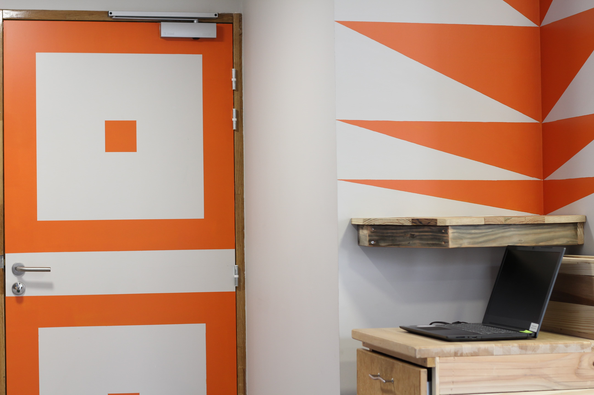
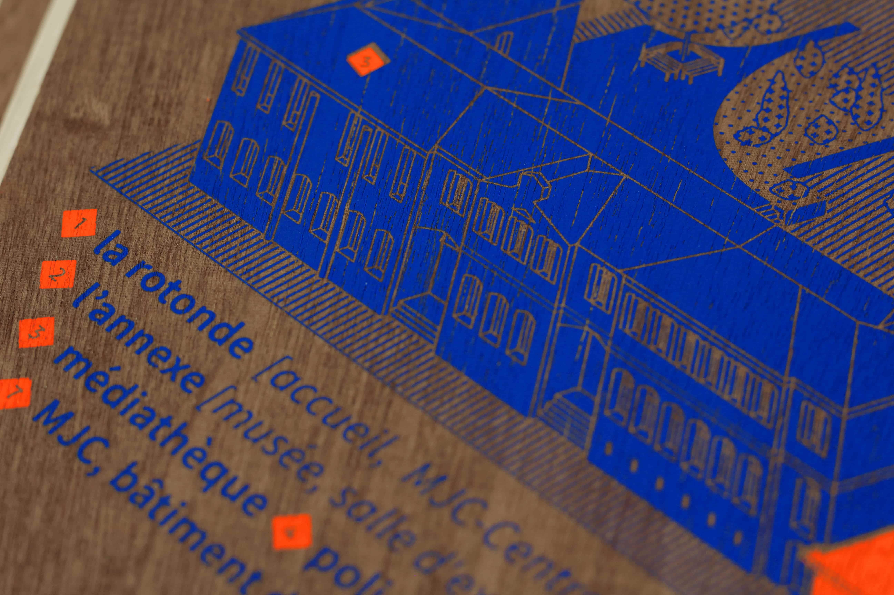
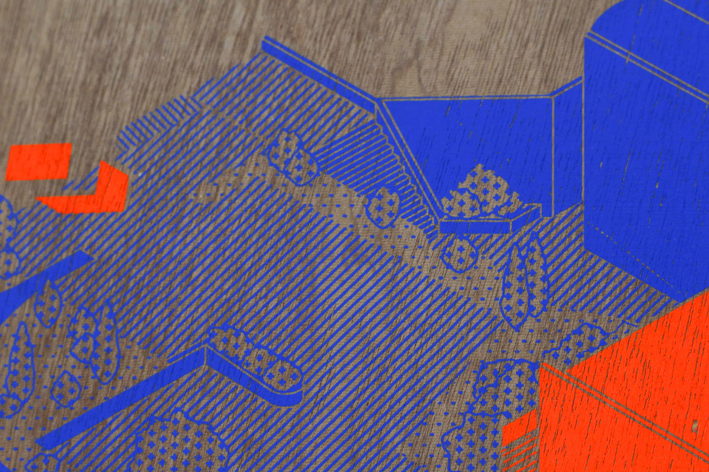
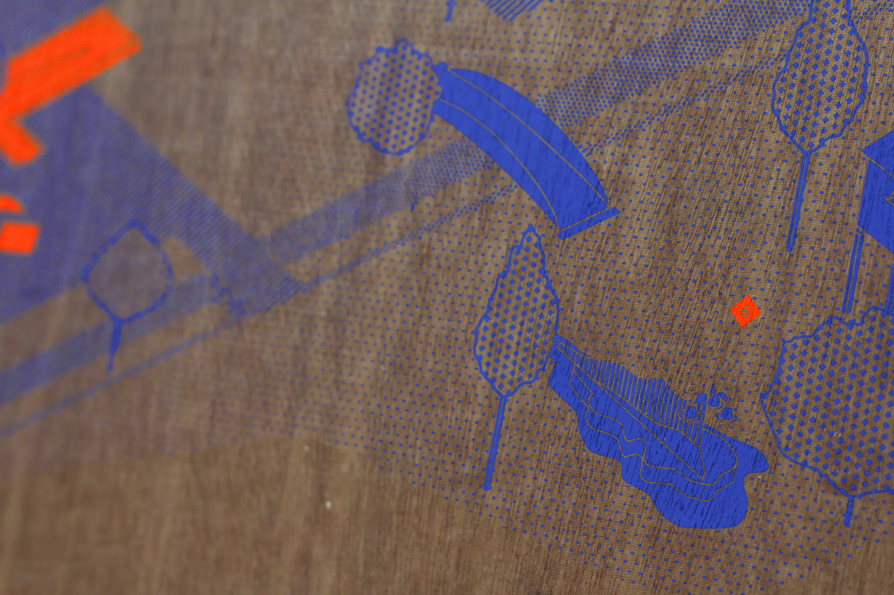

FR/ Identité visuelle, peinture murale et cartographie pour l’accueil de l’Escalys, tiers-lieu Saint-Lysien regroupant la MJCCCS, un fablab et un musée. Mobilier dessiné par La Capitainerie et fabriqué par Recyclobat en matériaux de réemplois.
Commanditaire : Mairie de Saint-Lys
Année : 2020
EN/ Visual identity, wall painting and cartography for the reception of the Escalys, Saint-Lys third-place gathering the MJCCCS, the Fablab and the museum. Furniture designed by La Capitainerie and manufactured by Recyclobat in reusable materials.
Client : Mairie de Saint-Lys
Year : 2020